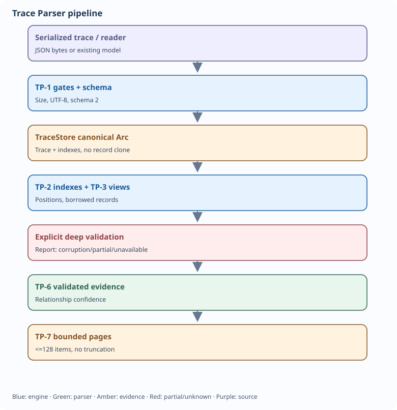
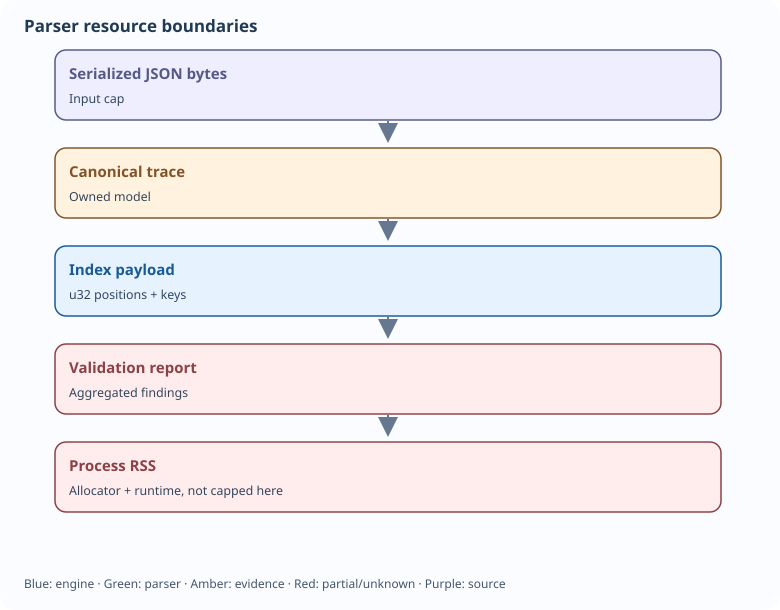

56 · Parser algorithms and invariants #
Key terms #
| Term | Plain meaning |
|---|---|
| Binary search | A fast search on a list whose order was checked first. If imported ordering is broken, the parser refuses this shortcut. |
| Invariant | A rule a query depends on, such as stop IDs increasing in the recorded order. |
>
The big picture #
This page collects the algorithms that are easy to misread from a method name: content detection, index construction, ordering-gated lookup, evidence resolution, deep-validation aggregation, realloc corroboration, confidence qualification and bounded paging. Each section names the invariant that makes the implementation correct.
Content detection and ingestion gates #
from_reader/open first reject oversized input, then gates rejects empty/whitespace and non-UTF-8 bytes (src/trace_parser/mod.rs:232-238,990-995). load_trace_document uses json::detect_format to distinguish a JSON document from journal-shaped text; journal-shaped input is rejected with JournalReconstructionUnsupported (:973-985). The detector is a dispatch aid, not a validation result. A malformed final journal line can classify as journal-shaped, but the typed journal parser still rejects it (src/trace_parser/json.rs:69-105; src/trace_parser/journal.rs:180-220).
Invariant: format classification never upgrades malformed evidence into a valid trace.
Eager position indexes #
TraceIndexes::build constructs five structures in one pass each (src/trace_parser/indexes.rs:94-116). The CSR builders use counting/prefix sums and a cursor; the source builder interns paths and deduplicates instruction IDs per source key (:400-500). The allocation builder maps IDs to positions without sorting canonical arrays (:626-656).
Invariant: an index stores a position, not a record. A canonical vector is never reordered or cloned to satisfy a query. pos() checks the u32 bound against the ingestion cap (:755-759).
Ordering-gated binary search #
OrderingFacts verifies snapshot stop order, event stop/checkpoint order, heap counters and gap positions (:694-747). A query that needs binary search first checks the relevant boolean:
snapshot_at_stopcheckssnapshots_by_stop_sorted(src/trace_parser/mod.rs:554-567);events_at_stopchecksevents_by_stop_sorted(:578-589);events_at_checkpointchecksevents_by_checkpoint_sorted(:596-615);heap_events_at_stopchecksheap_counts_sorted(:634-664).
Invariant: a broken recorded ordering is corruption, not permission to guess a nearest match. The dependent query returns OrderingViolation; raw canonical arrays remain available for investigation.
Evidence reference resolution #
evidence_ref validates a location with resolve_location, then binds the location to Arc::downgrade(&self.trace) (src/trace_parser/evidence.rs:129-135). resolve_evidence checks Weak::ptr_eq before resolving (:140-145). resolve_location performs direct get lookups and maps optional reports to Unavailable.
Invariant: identity is owner + location. Equal numeric positions from two independent loads are foreign. A reference cannot be serialized as a portable identity.
Deep-validation aggregation #
validate_deep runs the engine validator and a fixed sequence of passes (src/trace_parser/validation.rs:243-267). Builder::push groups by (code, severity), keeps the first location and increments a count (:814-841). finish orders corruption first (:843-855).
Invariant: missing evidence and corruption are different severities. A partial trace can be structurally sound; an optional field can be absent; a malformed reference can be corruption. is_structurally_sound() only checks corruption.
Realloc corroboration #
realloc_link requires a recorded predecessor ID, one compatible successor creation, one predecessor creation, matching PID/sequence/lifetime boundaries, and no cycle (src/trace_parser/validation.rs:1485-1566). Terminal realloc(ptr,0) rows are excluded from creation evidence (:1475-1483). validate_heap reports contradictions, ambiguity/unverified links and cycles (:1778-1834).
Invariant: ID existence is not relationship proof. The semantic layer maps Verified to definite only when identity is also definite; otherwise it remains candidate (src/trace_parser/semantic.rs:264-285).
Confidence qualification #
ValidatedSemanticView::qualify changes every confidence to Contradictory if the report has any structural corruption (src/trace_parser/semantic.rs:61-67). Otherwise, each method supplies a relationship-specific confidence: value validity for a variable, observed PID scope for a heap identity, source candidate status for an AST call, and so on.
Invariant: confidence is local in normal cases, global only for corruption. A complete observed-PID heap history does not make a source expression executed or a silent child observed.
Bounded consumer pages #
page validates half-open bounds and rejects ranges wider than 128 (src/trace_parser/consumer.rs:20-37). Callers pass a canonical collection length; the iterator yields QueryResult items with positions and references. checkpoint_summary composes one checkpoint and one snapshot reference (:57-68); variable, event, heap, gap and source pages all use the same gate.
Invariant: no silent truncation. A 300-item collection is traversed as 0..128, 128..256, 256..300; 0..129 is an explicit limit error.
Performance boundaries #
Loading is monolithic JSON deserialization plus one index build. Queries borrow canonical records; most are O(1) or O(log n) after ordering checks. A source-expression page is a bounded scan over the optional registry (capped at 4,096 expressions), not a line-expanded index. The parser's input byte cap and estimated index bytes are not a process RSS guarantee, and the engine's JSON export cap is not a parser memory cap. The historical 3,143-instruction workload is a benchmark input, not a universal bound.
Diagram notes #
Parser pipeline #


Performance boundaries #

